Active listening is a communication technique used in counseling, training, and conflict resolution. It requires that the listener fully concentrate, understand, respond and then remember what is being said.
Body language is a type of non-verbal communication in which physical behavior, as opposed to words, are used to express or convey information. Such behavior includes facial expressions, body posture, gestures, eye movement, touch and the use of space.
HUMOR
Humour is the tendency of particular cognitive experiences to provoke laughter and provide amusement. People of all ages and cultures respond to humour. Most people are able to experience humour, be amused, smile or laugh at something funny, and thus are considered to have a sense of humour.
INTERVIEWING
An interview is a conversation where questions are asked and answers are given. Interviews usually involve a transfer of information from interviewee to interviewer, which is usually the primary purpose of the interview, although information transfers can happen in both directions simultaneously.
PRESENTATION SKILLS
Presentation skills are the skills you need in delivering effective and engaging presentations to a variety of audiences. These skills cover a variety of areas such as the structure of your presentation, the design of your slides, the tone of your voice and the body language you convey.
PUBLIC SPEAKING
Public speaking (also called oration) is the process or act of performing a speech to a live audience. This type of speech is deliberately structured with three general purposes: to inform, to persuade and to entertain. Public speaking is commonly understood as formal, face-to-face speaking of a single person to a group of listeners
STORYTELLING
Storytelling is the social and cultural activity of sharing stories, often with improvisation, theatrics, or embellishment. Stories or narratives have been shared in every culture as a means of entertainment, education, cultural preservation and instilling moral values.
VERBAL COMMUNICATION
The sharing of information between individuals by using speech. Individuals working within a business need to effectively use verbal communication that employs readily understood spoken words, as well as ensuring that the enunciation, stress and tone of voice with which the words are expressed is appropriate.
Back to TOP
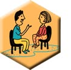COACHING
Coaching is a form of development in which a person called a coach supports a learner or client in achieving a specific personal or professional goal by providing training and guidance. The learner is sometimes called a coachee.
COLLABORATING
A Collaboration is a purposeful relationship in which all parties strategically choose to cooperate in order to achieve shared or overlapping objectives.
CRISIS MANAGEMENT
Crisis is a sequence of sudden disturbing events harming the organization. The art of dealing with such events is called Crisis Management. Crisis management is the application of strategies designed to help an organization deal with a sudden and significant negative event.
DECISION MAKING
Decision-making is regarded as the cognitive process resulting in the selection of a belief or a course of action among several alternative possibilities. Every decision-making process produces a final choice, which may or may not prompt action.
DELEGATION
Delegation is the assignment of any responsibility or authority to another person (normally from a manager to a subordinate) to carry out specific activities, such as starting on proper tires during a wet race. It is one of the core concepts of management leadership.
FACILITATION
Facilitation is any activity that makes tasks for others easy, or tasks that are assisted. Facilitation is used in business and organizational settings to ensure the designing and running of successful meetings and workshops.
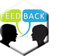GIVING FEEDBACK
Giving feedback is a process of providing information to others about how their behaviour or activity is viewed by the observer. Giving feedback to your colleagues and employees provides them with an observer's insight into how their performance is progressing, as well as advice to solve any problems. Giving feedback is a skill. And like all skills, it takes practice to get it right.
MANAGING
Management (or managing) is the administration of an organization, whether it be a business, a not-for-profit organization, or government body. Management includes the activities of setting the strategy of an organization and coordinating the efforts of its employees or volunteers to accomplish its objectives through the application of available resources.
MENTORING
Mentoring is a relationship between two people with the goal of professional and personal development. The "mentor" is usually an experienced individual who shares knowledge, experience, and advice with a less experienced person, or "mentee."
PERFORMANCE MANAGEMENT
Performance management is a process by which managers and employees work together to plan, monitor and review an employee's work objectives and overall contribution to the organization.
SUPERVISING
Supervision is the act or function of overseeing something or somebody. A person who performs supervision is a "supervisor", but does not always have the formal title of supervisor. A person who is getting supervision is the "supervisee".
TEAM BUILDING
Team building is a collective term for various types of activities used to enhance social relations and define roles within teams, often involving collaborative tasks.
 CONFLICT RESOLUTION
CONFLICT RESOLUTIONConflict resolution is a way for two or more parties to find a peaceful solution to a disagreement among them. The disagreement may be personal, financial, political, or emotional. When a dispute arises, often the best course of action is negotiation to resolve the disagreement.
Back to TOP
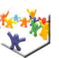MOTIVATION
t gives the reason for people's actions, desires, and needs. Motivation can also be defined as one's direction to behavior, or what causes a person to want to repeat a behavior and vice versa. A motive is what prompts the person to act in a certain way, or at least develop an inclination for specific behavior.
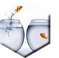ADAPTABILITY
Adaptability is the ability of an entity or organism to alter itself or its responses to the changed circumstances or environment. Adaptability shows the ability to learn from experience, and improves the fitness of the learner as a competitor.
ASSERTIVENESS
Assertiveness is the quality of being self-assured and confident without being aggressive. In the field of psychology and psychotherapy, it is a learnable skill and mode of communication.
ATTITUDE
It is an individual's pre-disposed state of mind regarding a value, and is precipitated through a responsive expression toward a person, place, thing, or event, which in turn influences the individual's thought and action.
CHANGE MANAGEMENT
Change management is a collective term for all approaches to preparing and supporting individuals, teams, and organizations in making organizational change.
DESIGN SENSE
Design sense is the ability or instinct of a person to plan the final look or functionality of something before it is made, usually by preparing a blueprint or some drawings. In organizations, design sense is mostly known as the awareness and ability of an individual to match the needs of the consumer with something that is technologically feasible as well as has the aptitude to provide customer value. Ideally, design sense of an individual is his ability to convert consumer need into demand, by offering something that not only satisfies the consumers but delights them.
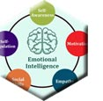EMOTIONAL INTELLIGENCE
Emotional intelligence is the capability of individuals to recognize their own and other people's emotions, discern between different feelings and label them appropriately, use these emotional information to guide thinking and behavior, and manage and/or adjust emotions to adapt to environments or achieve one's goal.
EMPATHY
Empathy is the capacity to understand or feel what another person is experiencing from within the other person's frame of reference, i.e., the capacity to place oneself in another's position.
ENTHUSIASM
Enthusiasm is intense enjoyment, interest, or approval. Enthusiasm is great eagerness to be involved in a particular activity which you like and enjoy or which you think is important. It is an activity or subject that interests you very much and that you spend a lot of time on.
INNOVATION
Innovation skills are practically the types of skills that allow individuals to become innovative in what they do. These are usually a combination of cognitive skills (e.g. the ability to think creatively and critically), behavioural skills (e.g. the ability to solve problems, to manage risk), functional skills (e.g. basic skills such as writing, reading and numeracy) and technical skills (e.g. research techniques, project management, or IT engineering).
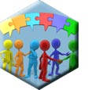INTERPERSONAL RELATIONSHIPS
An interpersonal relationship is a strong, deep, or close association or acquaintance between two or more people that may range in duration from brief to enduring. This association may be based on inference, love, solidarity, regular business interactions, or some other type of social commitment.
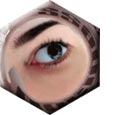PERCEPTION MANAGEMENT
Perception is defined as the "process by which individuals select, organize, and interpret the input from their senses to give meaning and order to the world around them". Components of perception include the perceiver, target of perception, and the situation. Perception Management is how this perception is managed so that the observer has a positive perception about us.
PERSONAL BRANDING
Personal branding is essentially the ongoing process of establishing a prescribed image or impression in the mind of others about an individual, group, or organization. Personal branding often involves the application of one's name to various products.
PERSUASION
Persuasion is an umbrella term of influence. Persuasion can attempt to influence a person's beliefs, attitudes, intentions, motivations, or behaviors. Persuasion is an art. If you push too hard, you will risk being aggressive. If you nudge too lightly, you may turn into a pest. A thoughtful, persuasive argument can lead you to getting what you want.
SELF ASSESSMENT
Self-assessment is the process of looking at oneself in order to assess aspects that are important to one's identity. It is one of the motives that drive self-evaluation, along with self-verification and self-enhancement.
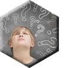SELF AWARENESS
Self-awareness is the capacity for introspection and the ability to recognize oneself as an individual separate from the environment and other individuals.
SELF CONFIDENCE
Self Confidence is a positive belief that in the future one can generally accomplish what one wishes to do. It is the self-assurance in one's personal judgment, ability, power, etc. One increases self-confidence from experiences of having mastered particular activities.
SELF LEADERSHIP
Self Leadership is having a developed sense of who you are, what you can do, where you are going, coupled with the ability to influence your communication, emotions and behavior on the way to getting there.
TIME MANAGEMENT
Time management is the process of planning and exercising conscious control over the amount of time spent on specific activities - especially to increase effectiveness, efficiency or productivity.
Back to TOP
Professional
Business ethics (also known as corporate ethics) is a form of applied ethics or professional ethics that examines ethical principles and moral or ethical problems that arise in a business environment. It applies to all aspects of business conduct and is relevant to the conduct of individuals and entire organizations.
BUSINESS ETIQUETTE
Business etiquette is a set of manners that is accepted or required in a profession. Often upheld by custom, it is enforced by the members of an organization. Those who violate business etiquette are considered offensive. The penalty for such behavior frequently lies in the disapproval of other organization members.
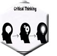CRITICAL THINKING
Critical thinking is the intellectually disciplined process of actively and skillfully conceptualizing, applying, analyzing, synthesizing, and/or evaluating information gathered from, or generated by, observation, experience, reflection, reasoning, or communication, as a guide to belief and action. These two skills are closely related, as the critical thinking skill leads to better problem solving.
CUSTOMER SERVICE
Customer service is the provision of service to customers before, during and after a purchase. It is the act of taking care of the customer's needs by providing and delivering professional, helpful, high quality service and assistance before, during, and after the customer's requirements are met. The perception of success of such interactions is dependent on employees "who can adjust themselves to the personality of the guest".
ENTREPRENEURIAL THINKING
Entrepreneurial thinking skills refer to the ability to identify marketplace opportunities and discover the most appropriate ways and time to capitalize on them. Sometimes, it is simply referred to as the ability to find and pursue the problem-solution fits.
KNOWLEDGE MANAGEMENT
Knowledge management is the process of creating, sharing, using and managing the knowledge and information of an organisation. It refers to a multidisciplinary approach to achieving organisational objectives by making the best use of knowledge.
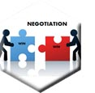NEGOTIATION
Negotiation is a dialogue between two or more people or parties intended to reach a beneficial outcome over one or more issues where a conflict exists with respect to at least one of these issues.
NETWORKING
Networking is a socioeconomic business activity by which businesspeople and entrepreneurs meet to form business relationships and to recognize, create, or act upon business opportunities, share information and seek potential partners for ventures.
ORGANIZING
Organizing is the process of ensuring healthy relationship among the departments by the proper channel of communication so that the personnel (employees) of every department can give their hundred percent contributions in the accomplishment of desired goals.
PLANNING
Planning is the process of thinking about and organizing the activities required to achieve a desired goal. It involves the creation and maintenance of a plan, such as psychological aspects that require conceptual skills.
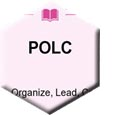P-O-L-C
The primary challenge of a manager is to solve problems creatively. While drawing from a variety of academic disciplines, and to help managers respond to the challenge of creative problem solving, principles of management have long been categorized into the four major functions of planning, organizing, leading, and controlling (the P-O-L-C framework). The four functions, summarized in the P-O-L-C figure, are actually highly integrated when carried out in the day-to-day realities of running an organization.
PROBLEM SOLVING
Problem solving consists of using generic or ad hoc methods, in an orderly manner, for finding solutions to problems. Problems are at the center of what many people do at work every day. Whether you're solving a problem for a client (internal or external), supporting those who are solving problems, or discovering new problems to solve, the problems you face can be large or small, simple or complex, and easy or difficult.
RESEARCH
Research is a careful study that is done to find and report new knowledge about something. This involves systematic empirical investigation of quantitative properties and phenomena and their relationships, by asking a narrow question and collecting numerical data to analyze it utilizing statistical methods.
SCHEDULING
Scheduling is the process of arranging, controlling and optimizing work and workloads in a production process or manufacturing process. Scheduling is used to allocate plant and machinery resources, plan human resources, plan production processes and purchase materials.
SELLING SKILLS
Selling is first and foremost a transaction between the seller and the prospective buyer or buyers (the target market) where money (or something considered to have monetary value) is exchanged for goods or services. This is a process of convincing a buyer to purchase the goods or services that the seller is offering.
TRAINING
Training is teaching, or developing in oneself or others, any skills and knowledge that relate to specific useful competencies. It is an organized activity aimed at imparting information and/or instructions to improve the recipient's performance or to help him or her attain a required level of knowledge or skill.
CREATIVE THINKING
A way of looking at problems or situations from a fresh perspective that suggests unorthodox solutions (which may look unsettling at first). Creative thinking can be stimulated both by an unstructured process such as brainstorming, and by a structured process such as lateral thinking.
Back to TOP